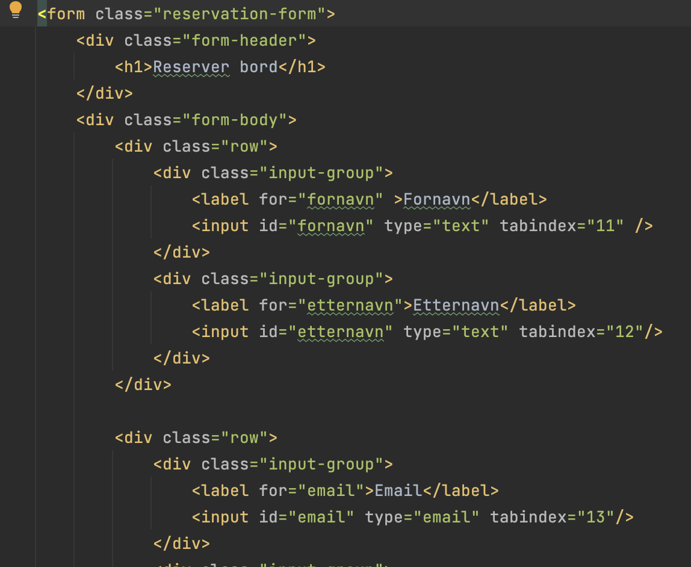

Gjennom koding av nettsiden vår, la vi mest vekt på god Accessibility. En av mange faktorer vi endte opp med å ha med var en god struktur på nettsiden: vi valgte blant annet å ha med en lik header med en oversiktlig navigasjonsbar på hver av sidene. På den måten kan brukere av nettsiden vår, enkelt og effektivt navigere seg rundt omkring på siden. I tillegg har vi med en footer med relevant kontaktinformasjon, åpningstider og adresse, som mest sannsynlig er det første brukere ønsker å vite. Alle sidene følger med kontaktinformasjon, åpningstider og adresse på bunnen av siden, slik at brukere ikke trenger å gå gjennom flere sider for å finne de mest relevante informasjonene. Tekst strukturen på hver av sidene er kort og ryddig, og tar kun for seg nødvendig informasjon.
TEKST UTEN BILDE. Gjennom koding av nettsiden vår, la vi mest vekt på god Accessibility. En av mange faktorer vi endte opp med å ha med var en god struktur på nettsiden: vi valgte blant annet å ha med en lik header med en oversiktlig navigasjonsbar på hver av sidene. På den måten kan brukere av nettsiden vår, enkelt og effektivt navigere seg rundt omkring på siden. I tillegg har vi med en footer med relevant kontaktinformasjon, åpningstider og adresse, som mest sannsynlig er det første brukere ønsker å vite. Alle sidene følger med kontaktinformasjon, åpningstider og adresse på bunnen av siden, slik at brukere ikke trenger å gå gjennom flere sider for å finne de mest relevante informasjonene. Tekst strukturen på hver av sidene er kort og ryddig, og tar kun for seg nødvendig informasjon.